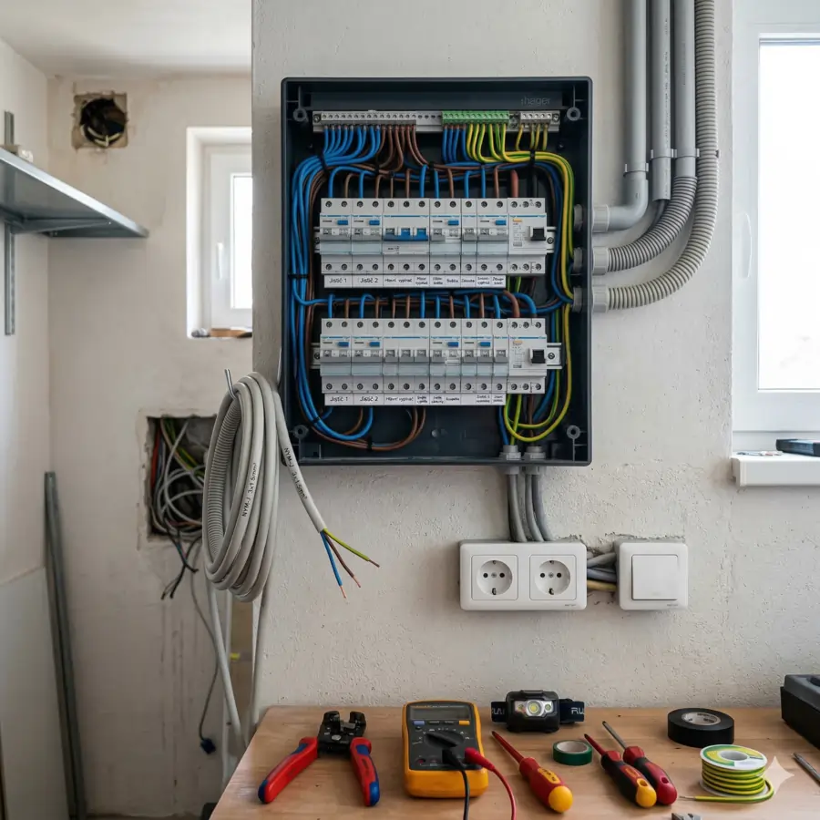
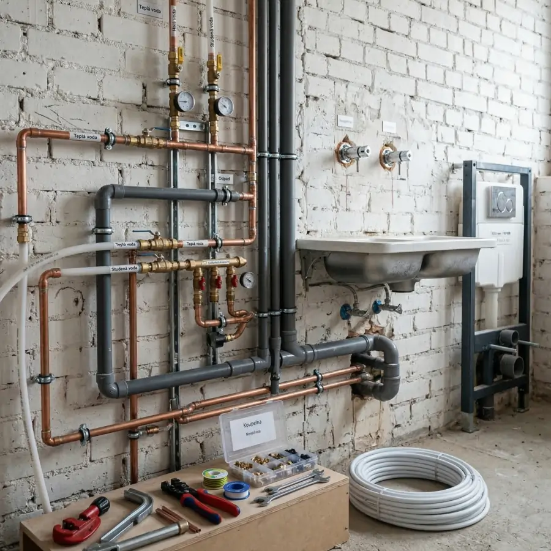
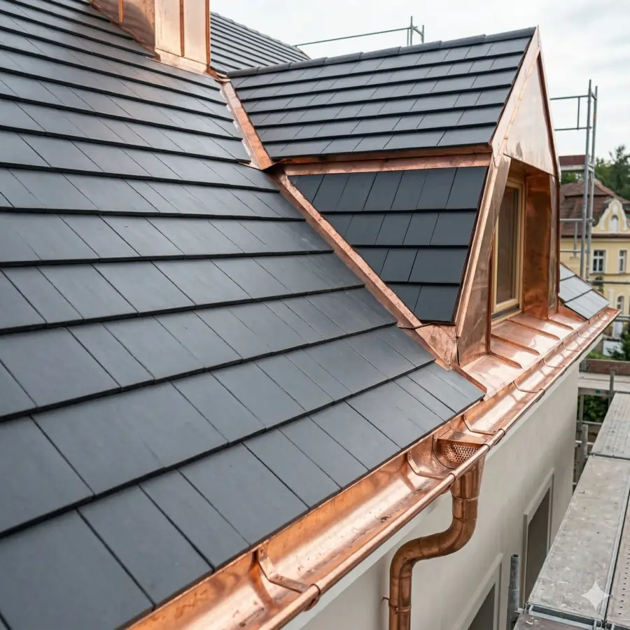
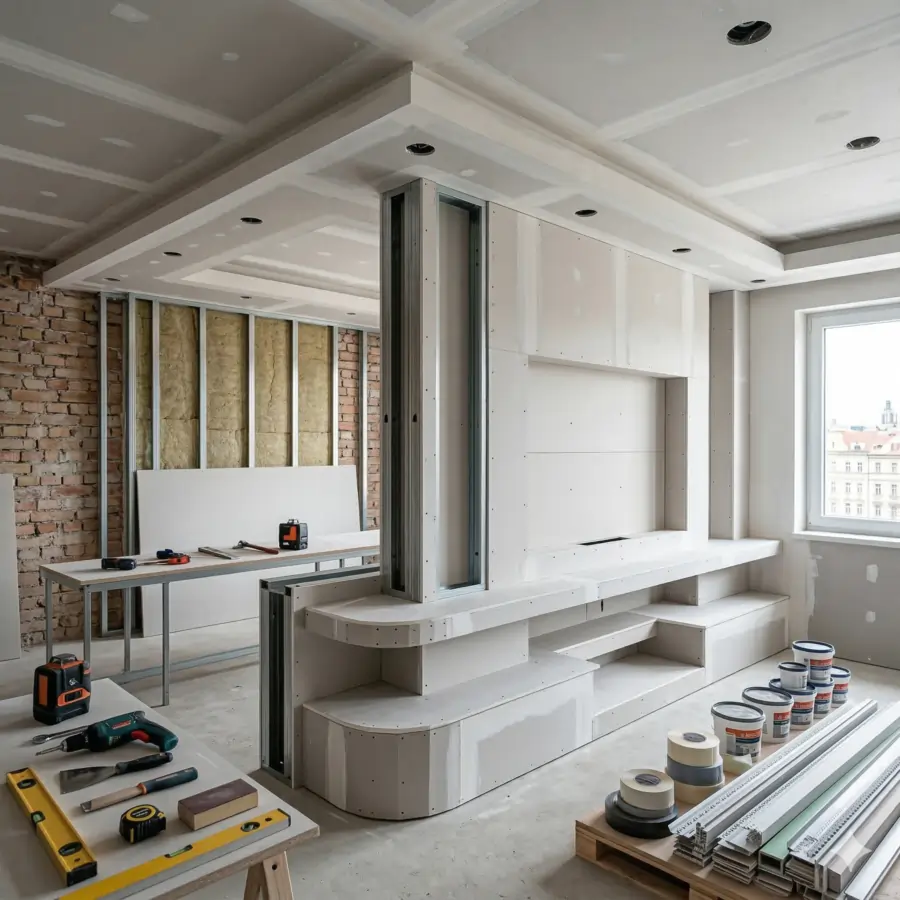
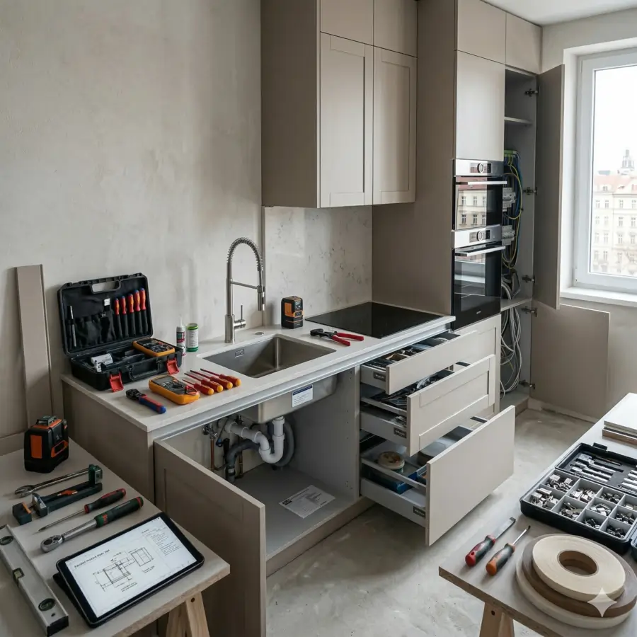
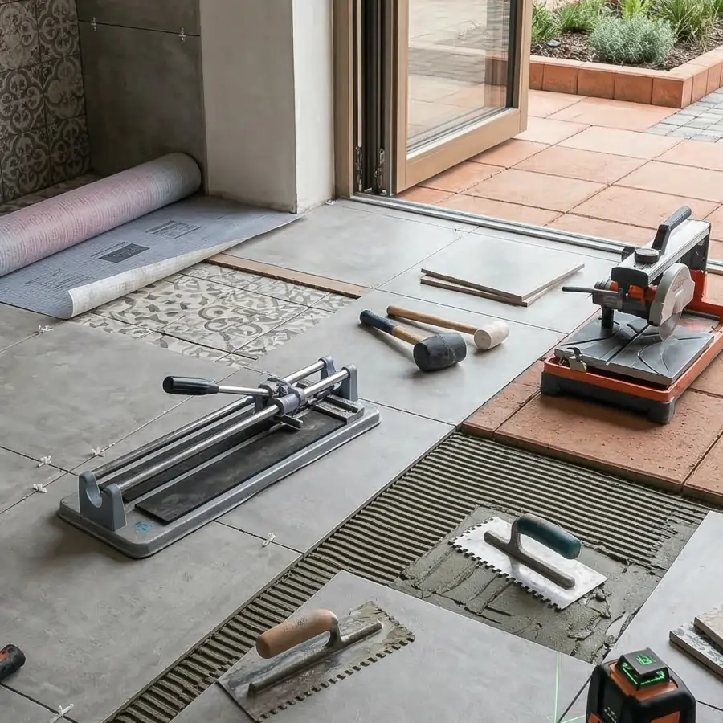

Elektroinstalace
Provádíme kompletní elektroinstalační práce pro rodinné domy, byty i komerční prostory. Od návrhu rozvodů přes instalaci jističů až po přípravu na revizi.
- Kompletní elektroinstalace novostaveb
- Rekonstrukce a výměna starých rozvodů
- Montáž rozvaděčů, jističů a zásuvek
- Instalace osvětlení a domácích zvonků
Vodoinstalace a topení
Zajišťujeme profesionální vodoinstalatérské práce — montáž rozvodů teplé a studené vody, odpadního potrubí i připojení sanitárních zařízení. Používáme moderní a odolné materiály.
- Montáž rozvodů teplé a studené vody
- Instalace odpadního potrubí
- Připojení umyvadel, van a sprch
- Opravy a servis stávajících rozvodů


Pokrývačské a klempířské práce
Realizujeme nové střešní krytiny, opravy a údržbu střech, montáž okapových systémů a veškeré klempířské prvky. Pracujeme s tradičními i moderními materiály.
- Pokládka a výměna střešní krytiny
- Montáž a opravy okapových systémů
- Klempířské oplechování
- Opravy a údržba plochých i šikmých střech
Sádrokartonářské práce
Montáže sádrokartonových příček, podhledů, předstěn a obložení. Ideální řešení pro rychlé a čisté úpravy interiéru — ať jde o novou dispozici nebo skrytí rozvodů.
- Montáž příček a předstěn
- Realizace podhledů a stropů
- Obložení stěn a podkroví
- Tmelení a broušení do finální kvality


Montáž kuchyní
Profesionální montáž kuchyňských linek na klíč. Od zaměření přes sestavení skříněk a pracovní desky až po napojení spotřebičů a finální seřízení.
- Kompletní sestavení kuchyňské linky
- Řezání a osazení pracovní desky
- Zapojení dřezu a baterie
- Připojení vestavných spotřebičů
Obklady, dlažby a koupelny
Pokládka obkladů a dlažeb v koupelnách, kuchyních, na terasách i v dalších prostorech. Pracujeme se všemi typy materiálů — keramika, porcelán i přírodní kámen.
- Pokládka v interiéru i exteriéru
- Hydroizolace v mokrých provozech
- Příprava a nivelace podkladu
- Spárování a aplikace silikonů

Jak probíhá spolupráce
Nezávazná poptávka
Kontaktujete nás s vaším záměrem. Probereme základní představy a možnosti vaší zakázky.
Zaměření a kalkulace
Přijedeme na místo, vše pečlivě zaměříme a zdarma připravíme transparentní cenovou nabídku.
Realizace
Pustíme se do práce — včas, kvalitně a s maximálním ohledem na minimalizaci omezení.
Předání a záruka
Předáme vám hotové dílo v perfektním stavu s plnou zárukou na všechny práce.
Výhody našich služeb
Rychlost bez kompromisů
Dodržujeme stanovené termíny díky pečlivému plánování a spolehlivé organizaci práce.
Jasné ceny a rozpočty
Žádné skryté poplatky. Všechny náklady jsou jasně definovány před začátkem práce.
Vlastní vybavení a nářadí
Disponujeme vlastním profesionálním vybavením a nářadím, což šetří váš čas i peníze.
Zkušený odborník
Využíváme nejnovější poznatky a postupy v oboru pro maximální kvalitu výsledku.